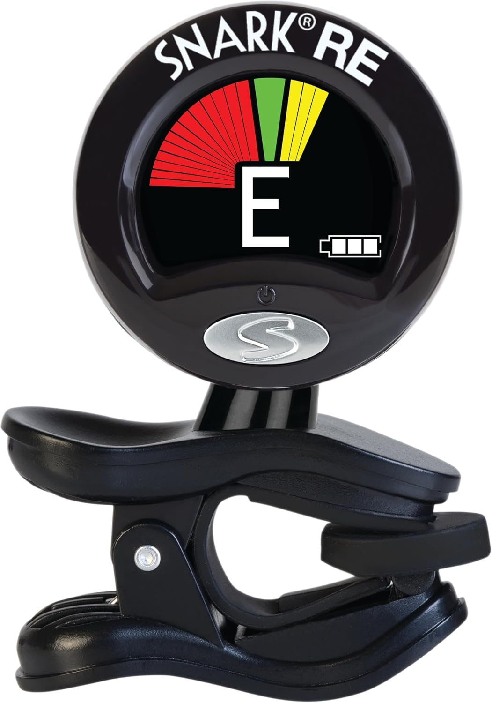
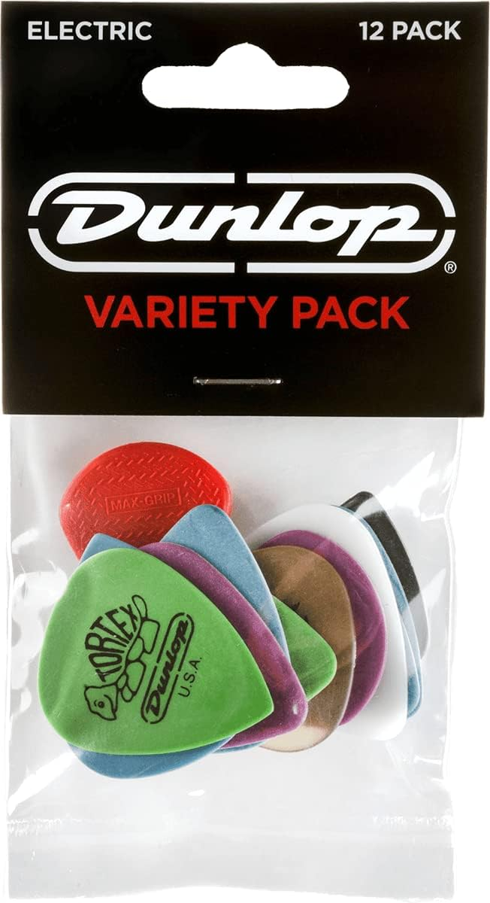
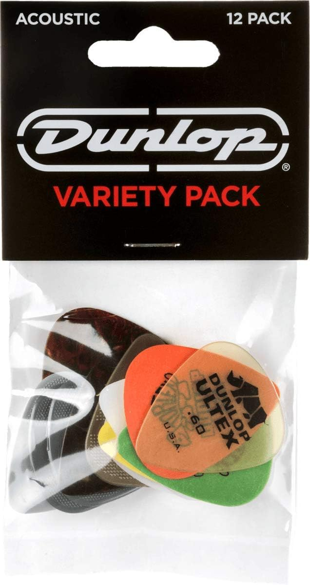

Recommended Yet Not Required
There are only two things here, and that is a Snark Tuner and a variety of "picks" or "plectrums" depending on where you are from.
With a clip-on tuner you can get right in tune to start playing, which I would recommend doing every time you pick up your guitar, as it's a good habit to get into. The Snark Tuner is very easy to use and quite cheap. The only reason it is here and not in the normal gear page is because you could do it by ear or with an app on your phone.
Next are picks. The reason this is optional is that many people use their fingers to play. This is called fingerstyle. While this technique is fun and worthwhile to learn, I wouldn't recommend it if you are just starting out.

Snark SN5X Clip-On Tuner
$13.89

Dunlop Electric Pick Variety Pack
$6.49

Dunlop Acoustic Pick Variety Pack
$6.49
Optional Gear
WIP